未來氣候推估
宜蘭縣基期（1995–2014）與全球暖化程度 2°C 下的變化。
推估摘要（基期 vs 暖化 2°C）
- 年平均溫度：18°C，平均增加 1.1°C，非常可能範圍約為 0.5–1.7°C
- 年高溫 36°C 天數：1.1 天，平均增加 9.7 天，非常可能範圍約為 3.7–17.7 天
- 年降雨量：2,742 毫米，平均增加 2.2%，非常可能範圍約為 -11.1–18.8%
-
季節降雨量：
- 春季 346.8 毫米，平均減少 2.1%，非常可能範圍約為 -18.3–19.8%
- 梅雨季 416.3 毫米，平均增加 0.8%，非常可能範圍約為 -25.6–44.6%
- 夏季 981.2 毫米，平均增加 6.0%，非常可能範圍約為 -17.7–35.1%
- 秋季 708.8 毫米，平均增加 4.5%，非常可能範圍約為 -25.9–38.4%
- 冬季 295.5 毫米，平均減少 4.8%，非常可能範圍約為 -29.9–20.4%
- 年最大一日降雨量：284.4 毫米，平均增加 9.3%，非常可能範圍約為 -9.7–29.0%
- 年最長連續不降雨日數：21.8 天，平均增加 0.9 天，非常可能範圍約為 -2.1–3.9 天
年平均溫度
與基期（1995–2014）相比，在不同全球暖化程度下，推估宜蘭縣年平均溫度的變化。
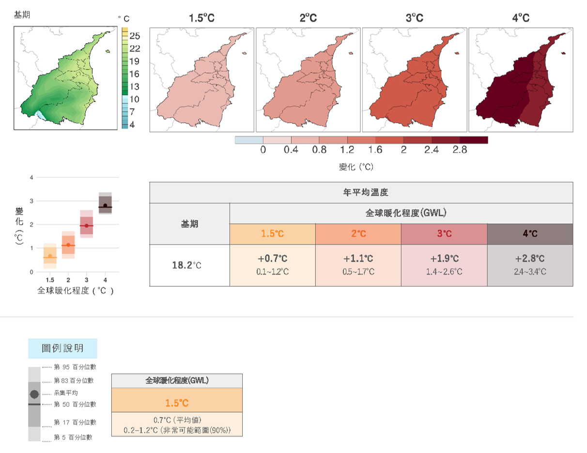
年平均溫度的變化分布
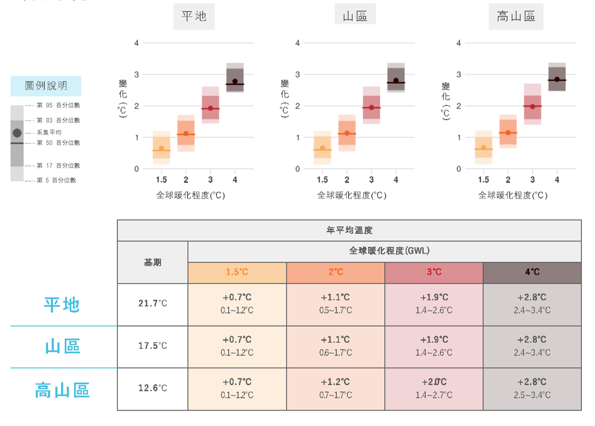
年平均溫度區域劃分
年高溫 36°C 天數
與基期（1995–2014）相比，在不同全球暖化程度下，推估宜蘭縣年高溫 36°C 天數的變化。
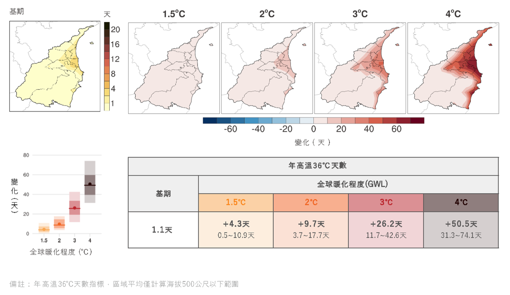
年高溫 36°C 天數的變化分布
年降雨量
與基期（1995–2014）相比，在不同全球暖化程度下，推估宜蘭縣年降雨量的變化。
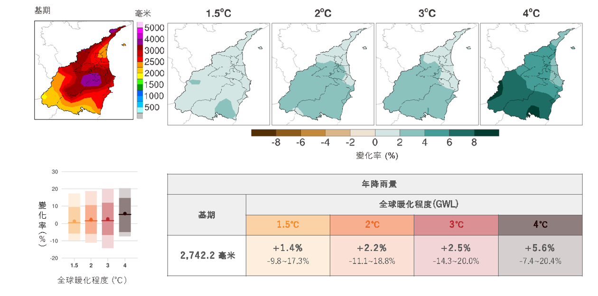
年降雨量的變化分布

年降雨量區域劃分
季節降雨
與基期（1995–2014）相比，在不同全球暖化程度下，推估宜蘭縣各季節降雨的變化。
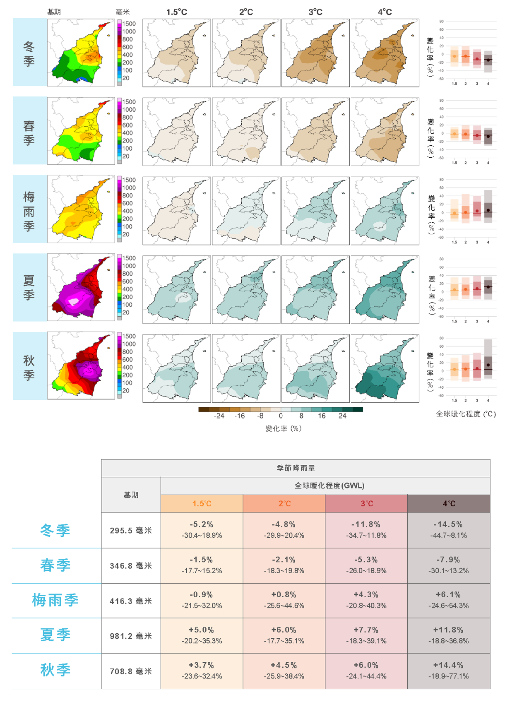
季節降雨的變化分布
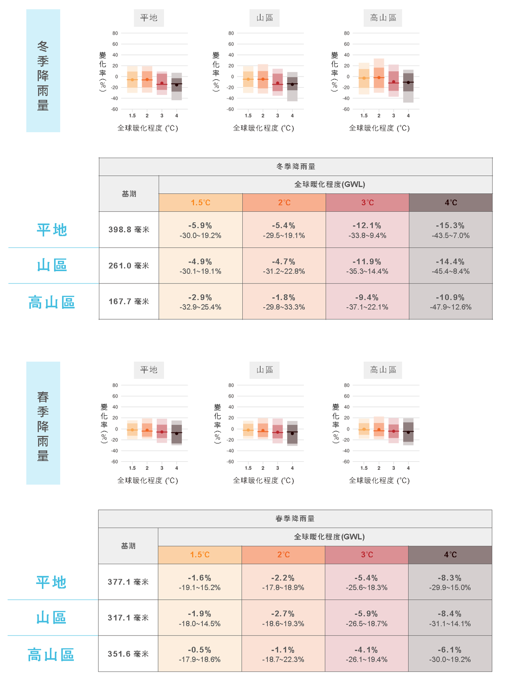
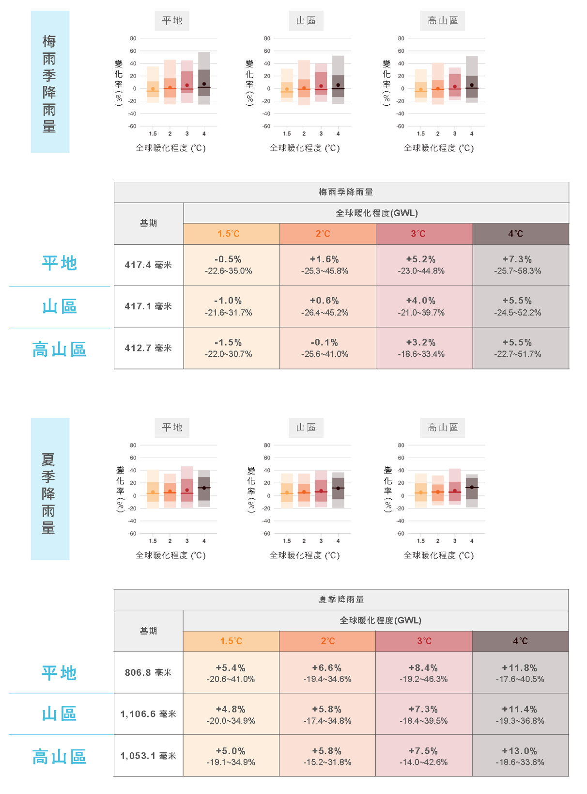
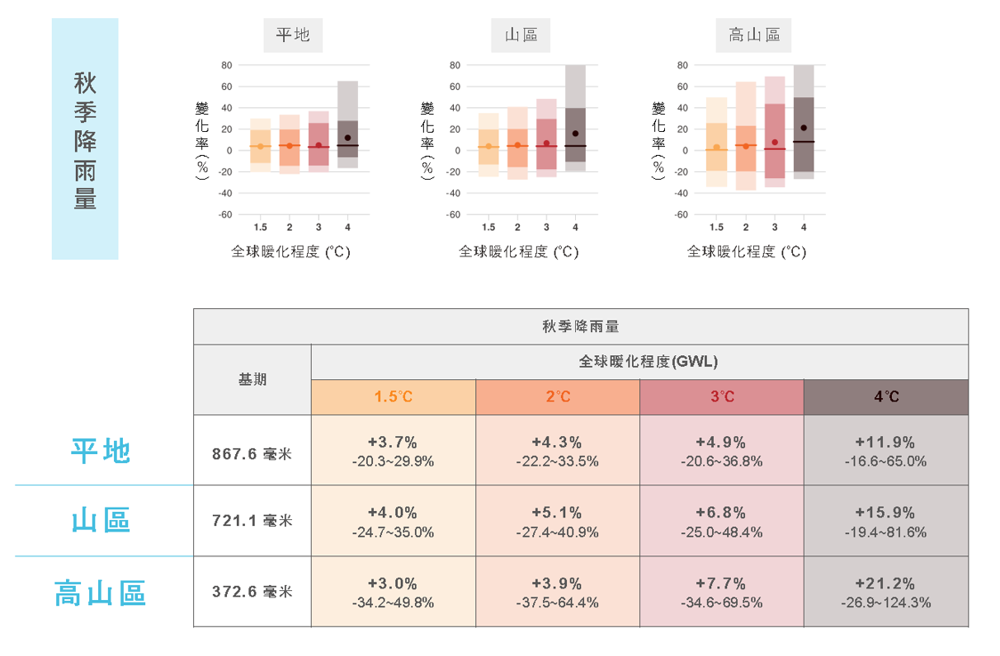
季節降雨區域劃分
年最大一日降雨量
與基期（1995–2014）相比，在不同全球暖化程度下，推估宜蘭縣年最大一日降雨量的變化。
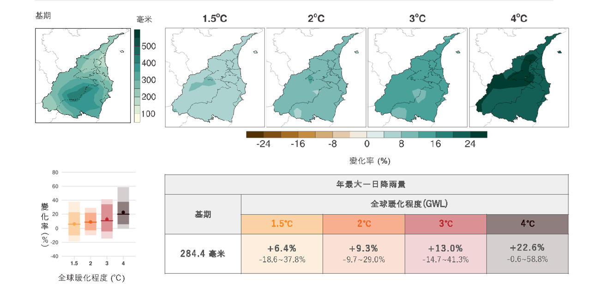
年最大一日降雨量的變化分布
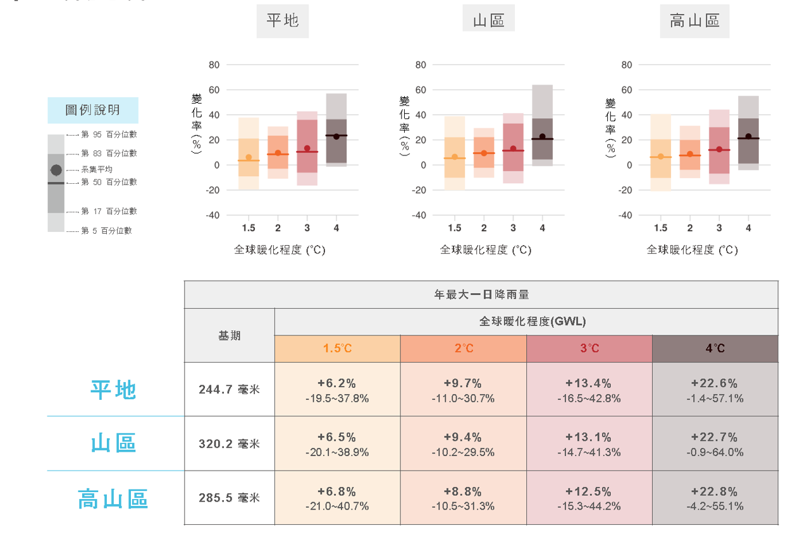
年最大一日降雨量區域劃分
年最長連續不降雨日數
與基期（1995–2014）相比，在不同全球暖化程度下，推估宜蘭縣年最長連續不降雨日數的變化。
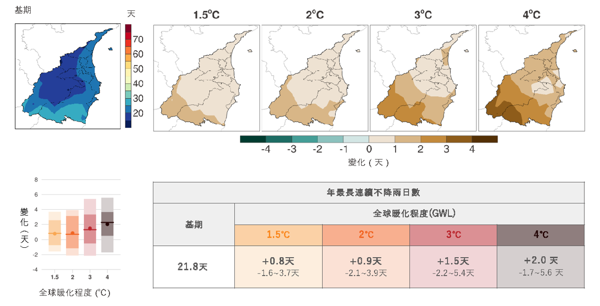
年最長連續不降雨日數的變化分布
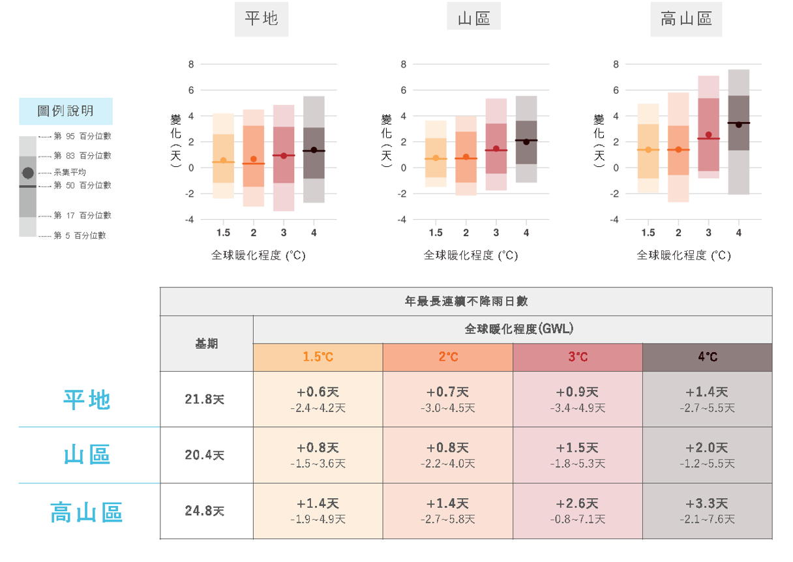
年最長連續不降雨日數區域劃分
資料來源：『縣市氣候變遷概述 2024』，國科會「臺灣氣候變遷推估資訊與調適知識平台計畫（TCCIP）」。